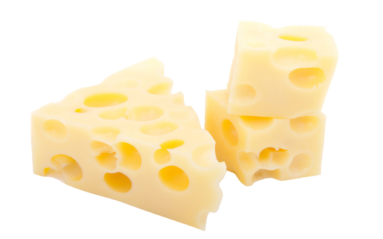

Cheeses Found: 0
Fastest Time: 0:00
Stopwatch: 0:00
Move your cursor (or finger) around the screen in different areas. When the beeping sound seems the loudest, click on that spot, and you found the invisible cheese.
Start